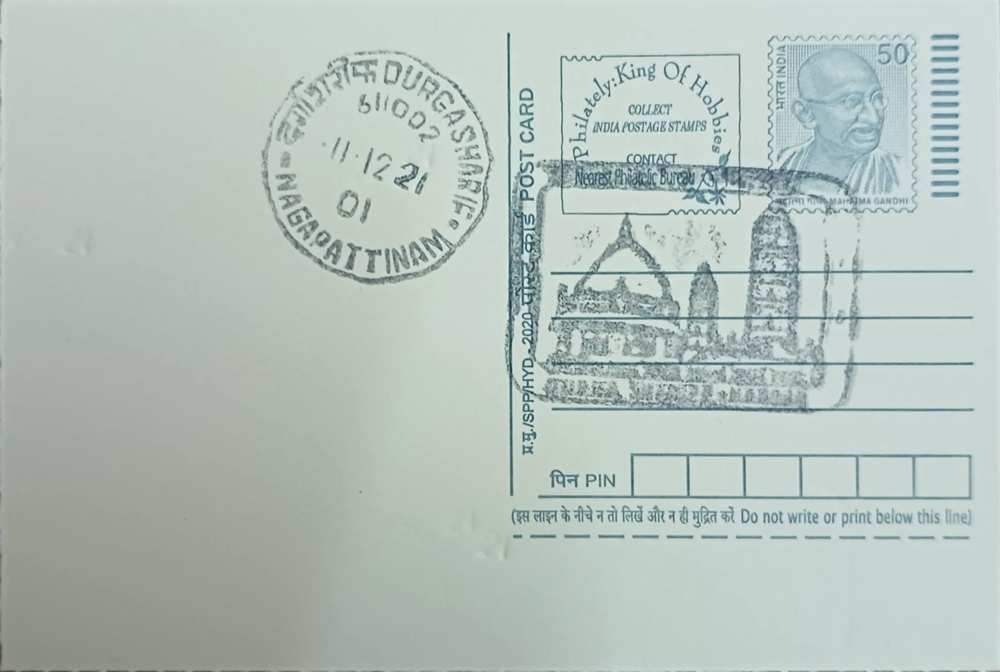

Dargah Sharif
தர்காஹ் ஷரீஃப்


The Nagore Dargah traces its origins to Hazrat Syed Shahul Hameed, a Sufi saint of the Qadiriyya order born around 1490 in Manikpur, near present-day Allahabad in Uttar Pradesh, into a family claiming descent from the Prophet Muhammad through Hazrat Ali and Bibi Fatima. After years of travel and spiritual training, he settled in Nagapattinam district, where local tradition holds that he healed the Thanjavur Nayak ruler Achutappa Nayak of a chronic ailment, an episode credited with winning him wide reverence among both Muslim and Hindu communities of the Coromandel coast and establishing the basis for the shrine that would rise over his tomb after his death in 1579.
As a Sufi dargah built over the saint's burial site, Nagore Dargah ranks among the most visited Islamic shrines in South India and is frequently cited alongside shrines such as Nagore Sharif's own overseas offshoots, including a former dargah in Singapore established by Tamil Muslim traders, as evidence of the saint's following extending well beyond Tamil Nadu. Its significance rests less on doctrinal distinction than on its standing as a shared sacred site, drawing Hindu and Muslim pilgrims alike in numbers that place it among the subcontinent's prominent examples of composite devotional practice, a status reinforced by patronage historically extended to it by Hindu rulers and merchant communities rather than Muslim patrons alone.
The shrine complex as it stands today took shape gradually, with devotees and regional patrons adding structures over roughly two centuries following the saint's death. Its most recognisable features are five minarets of varying height and date: the tallest, built by the Maratha Hindu ruler of Thanjavur, Pratap Singh, who reigned from 1739 to 1763, rises to about 131 feet (40 metres), while the others, the Sahib Minara at roughly 77 feet, the Thalaimattu Minara at about 93.5 feet, the Muthubaq Minara at approximately 93.25 feet, and the Ottu Minara at around 80 feet, were raised by different benefactors, giving the complex a visibly layered architectural history. The main shrine is crowned with a gold-plated dome in an Indo-Islamic style, and a large sacred tank situated behind the dargah serves the ritual needs of pilgrims.
The dargah's best-known annual event is the Kanduri, also called Urus Mubarak, a fourteen-day commemoration of Shahul Hameed's death anniversary that culminates in a procession and the ceremonial hoisting of a flag, drawing several hundred thousand pilgrims of multiple faiths to Nagapattinam each year. The scale and cross-community character of the festival, in which Hindu devotees participate alongside Muslims in rituals and offerings, has made it one of the more closely studied instances of shared religious practice in Tamil Nadu, and it remains the occasion on which the shrine's five minarets and courtyards see their heaviest use, with specific rites performed at each minaret in a sequence tied to the patrons who built them.
Day-to-day affairs of the shrine are overseen by the Nagore Dargah committee, which manages the upkeep of the minarets, the tank, and the surrounding complex and coordinates the logistics of the Kanduri festival, including crowd management for the large pilgrim influx. The saint's influence also extended through trade networks to Southeast Asia, where Tamil Muslim merchants established a namesake Nagore Dargah in Singapore in the nineteenth century, later gazetted as a national monument there, underscoring how far the Nagapattinam shrine's spiritual reach travelled along maritime trading routes. The dargah today functions as both an active place of worship and a well-known pilgrimage destination administered for the practical needs of its daily and seasonal visitors rather than as a static historical monument.
| Date of Introduction | October 8, 1976 |
|---|---|
| Address | Sub Postmaster, |
| Nagore SO, | |
| Nagapattinam (dt.), Tamil Nadu - 611002. |